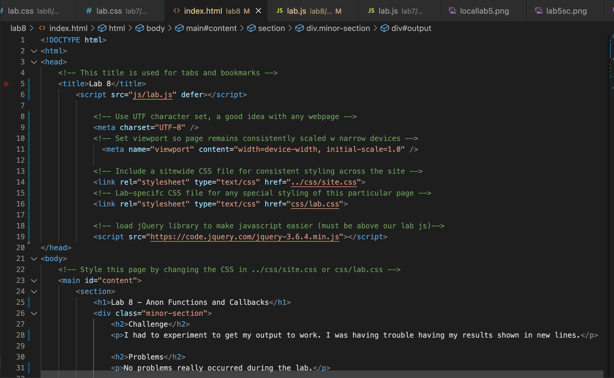
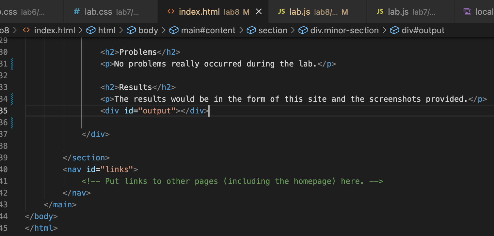
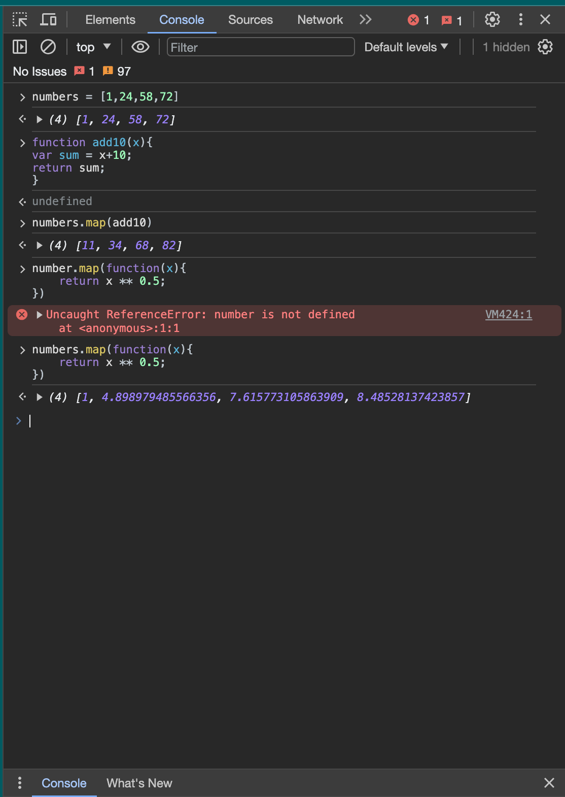
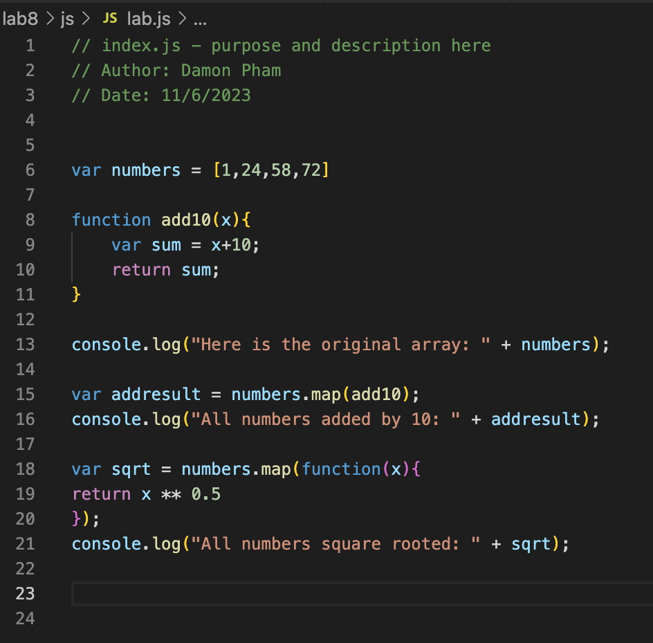
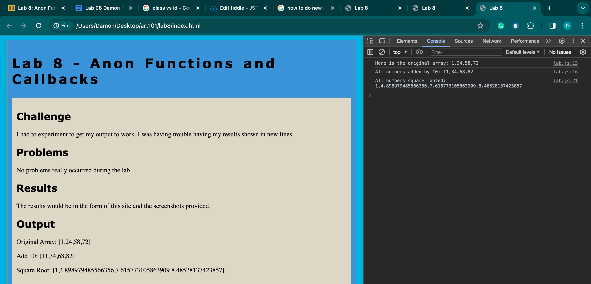
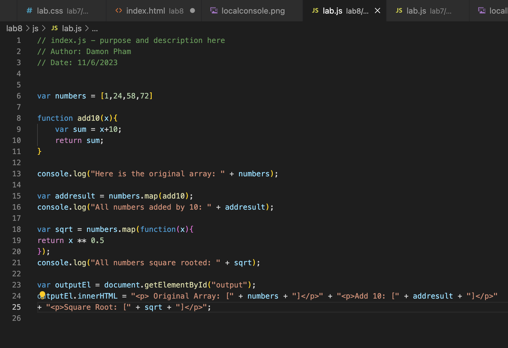

Lab 8 - Anon Functions and Callbacks
Challenge
I had to experiment to get my output to work. I was having trouble having my results shown in new lines.
Problems
No problems really occurred during the lab.
Results
The results would be in the form of this site and the screenshots provided.
Output
Screenshots
Screenshot of index.html part 1
Screenshot of index.html part 2
Screenshots
Screenshot of console results
Screenshot of JavaScript code in editor
Screenshot of local index.html working
Screenshot of final upload of JavaScript code
